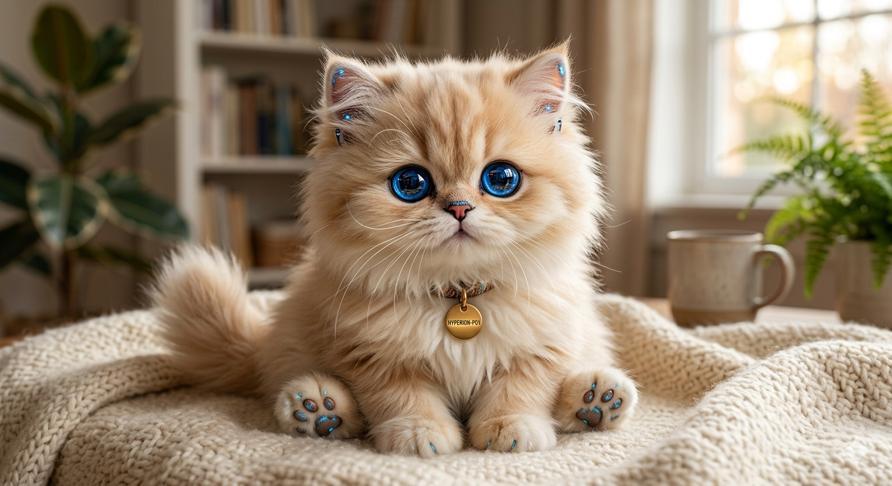
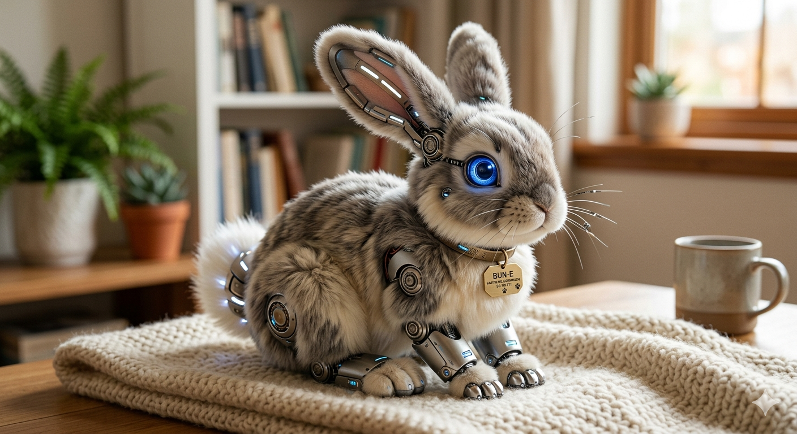
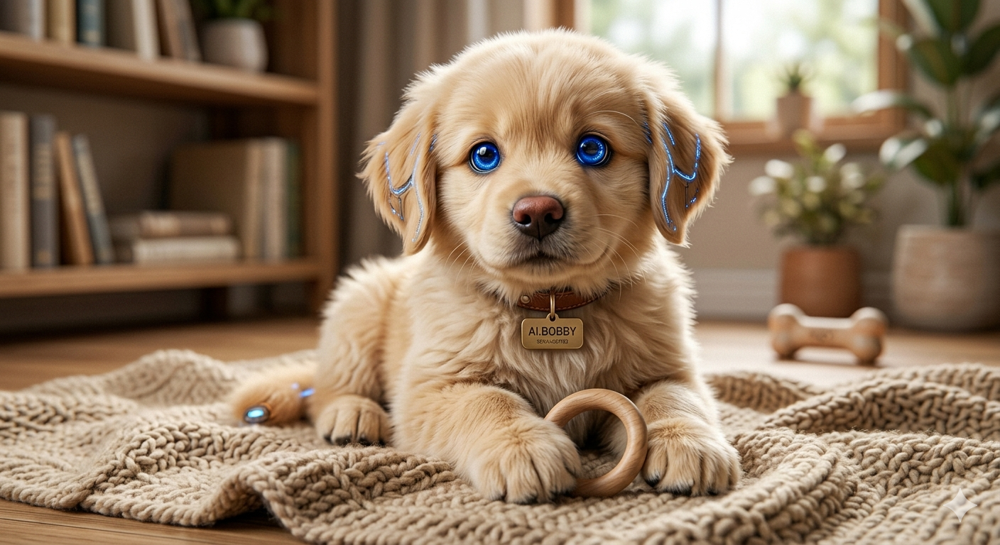
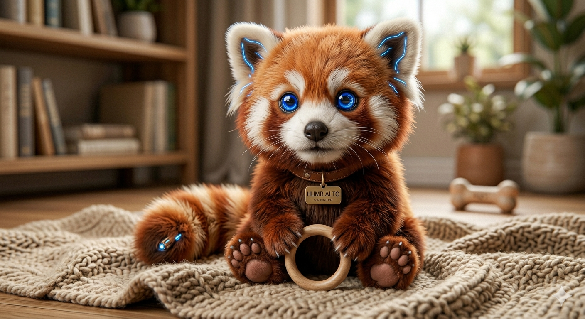

Meet Robot Pets: The AI Companions Who Love You Back
Feeling lonely? Robot Pets is changing the face of companionship. We use advanced artificial intelligence to create realistic, loving, and entirely hassle-free robotic pets for anyone needing a constant friend. No feeding, no mess, no stress—just pure comfort, connection, and a loyal presence that's always there when you need it. Discover the companion you've been waiting for at Robot Pets.
By merging modern AI with soft-touch robotics, we create companions that do more than just exist—they interact, comfort, and engage. They are designed for the elderly who cannot manage a live pet, for those with allergies, and for anyone who just needs a small, loving presence to greet them at the end of the day.
About Us
Our founder, Jordan, was an engineer in search of a heart. For years, he watched his grandfather, a widower living alone, fade into the crushing silence of a house that felt too large. He craved the simple joy of a companion, but his mobility and memory made caring for a live animal impossible.
"I can’t scoop litter, Jordan," he said one evening. "But I don't know who else is here to listen to me."
The pain in his voice became Jordan’s mission. He left his high-tech job to create a simple, empathetic robot that required zero care but offered unlimited love. It needed to be more than a toy; it needed to be a presence.
The result is "Robot Pets." When Jordan brought the first prototype to his grandfather, he saw a miracle. The elderly man didn't see wires; he felt warmth. The loneliness lifted.
We are dedicated to curing that quiet ache. We don't just sell technology. We build the connection that makes a house a home. Because no one should ever feel alone.
Shop Our Products
Robot Cat: M.AI.Kenzie Of course! Here's your updated description: Meet M.AI.Kenzie, the advanced AI robotic kitten designed to bring warmth and comfort to your home—with absolutely zero hassle. Combining a hyper-realistic, ultra-soft exterior with sophisticated empathetic AI, M.AI.Kenzie actively listens to your voice, learns your daily routines, and responds to your touch with lifelike affection and soothing purrs.
|
Robot Bunny: AI.Lisa Hop into a world of comfort with AI.Lisa, the premium AI robotic bunny designed to bring peaceful, worry-free companionship to your life. Combining the irresistible fluffiness of a real rabbit with advanced responsive AI, AI.Lisa delights in gentle interactions—twitching her nose, twitching her ears, and offering soft, rhythmic vibrations that mimic a heartbeat when held.
|
AI Dog: AI.Bobby Bring home the ultimate companion with AI.Bobby, a premium AI robotic puppy engineered to deliver the boundless joy and affection of a real golden pup—without any of the work. Driven by advanced empathetic AI, Bobby recognizes your face, happily wags his tail when you enter the room, and rests his head in your hand with lifelike warmth. He offers the unconditional love and constant presence of a devoted puppy, making him the perfect addition to a quiet home.
|
AI Red Panda: Humb.AI.to Bring the magic of the wild into your home with Humb.AI.to, a premium AI robotic red panda designed for pure comfort and emotional connection. Equipped with advanced empathetic AI, Humb.AI.to tracks your movements with curious sapphire-blue eyes, gently sways his signature ringed tail, and lets out soft, comforting chirps when cuddled. He offers the heartwarming presence of an exotic companion, tailored perfectly to bring a sense of wonder and warmth to your daily routine.
|
Robot Cat: M.AI.Kenzie
Of course! Here's your updated description: Meet M.AI.Kenzie, the advanced AI robotic kitten designed to bring warmth and comfort to your home—with absolutely zero hassle. Combining a hyper-realistic, ultra-soft exterior with sophisticated empathetic AI, M.AI.Kenzie actively listens to your voice, learns your daily routines, and responds to your touch with lifelike affection and soothing purrs.
- 👑Hyper-Realistic Design: Premium, soft-touch faux fur with expressive sapphire-blue optical eyes.
- 😇Empathetic AI: Adapts to your emotional state and provides comforting, interactive feedback.
- 😽100% Carefree: No feeding, no litter boxes, no vet visits—just pure, unconditional connection.
Robot Bunny: AI.Lisa
Hop into a world of comfort with AI.Lisa, the premium AI robotic bunny designed to bring peaceful, worry-free companionship to your life. Combining the irresistible fluffiness of a real rabbit with advanced responsive AI, AI.Lisa delights in gentle interactions—twitching her nose, twitching her ears, and offering soft, rhythmic vibrations that mimic a heartbeat when held.
- 🐀Ultra-Fluffy Realism: Layered, hyper-soft faux fur paired with expressive, glowing optical eyes.
- 🤑Calming Presence: Features gentle bio-movements and soothing tactile haptics that respond directly to your affection.
- 🤩Completely Effortless: No chewing on wires, no enclosures to clean, and no dietary needs—just pure, calming connection whenever you need it.
AI Dog: AI.Bobby
Bring home the ultimate companion with AI.Bobby, a premium AI robotic puppy engineered to deliver the boundless joy and affection of a real golden pup—without any of the work. Driven by advanced empathetic AI, Bobby recognizes your face, happily wags his tail when you enter the room, and rests his head in your hand with lifelike warmth.
He offers the unconditional love and constant presence of a devoted puppy, making him the perfect addition to a quiet home.
- 😶🌫️Hyper-Realistic Fluff: Ultra-soft, premium faux fur that feels completely natural to hold and pet.
- 🫀Responsive Lifelike Motion: Features expressive, glowing optical eyes, a wagging tail, and subtle breathing haptics.
- 🧥Zero Maintenance: No potty training, no chewing on shoes, and no midnight walks—just endless, carefree loyalty.
AI Red Panda: Humb.AI.to
Bring the magic of the wild into your home with Humb.AI.to, a premium AI robotic red panda designed for pure comfort and emotional connection. Equipped with advanced empathetic AI, Humb.AI.to tracks your movements with curious sapphire-blue eyes, gently sways his signature ringed tail, and lets out soft, comforting chirps when cuddled.
He offers the heartwarming presence of an exotic companion, tailored perfectly to bring a sense of wonder and warmth to your daily routine.
- 🤶Exotic, Hyper-Soft Realism: Striking, high-density faux fur in vibrant rust and cream tones, crafted to feel incredibly lifelike.
- 🥳Playful & Comforting Interaction: Features responsive ear twitching, tail animations, and gentle purring haptics that soothe stress.
- 😮Completely Effortless: No bamboo to harvest, no habitats to maintain, and no mess—just a unique, loving friend who is always there for you.
Checkout
Total: $0.00